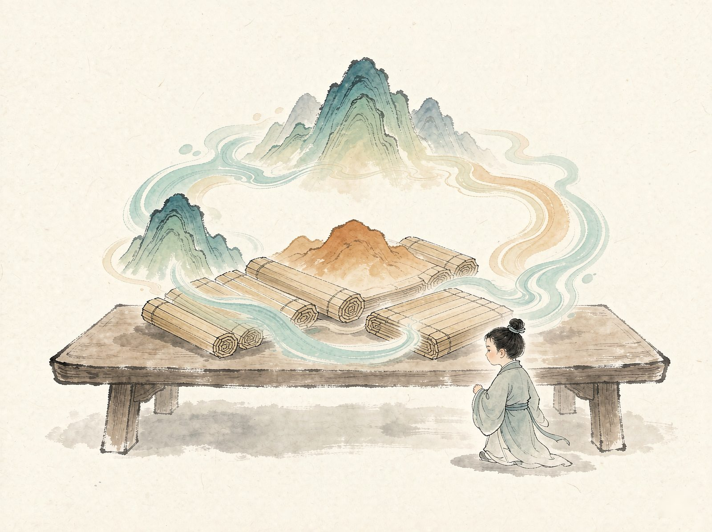
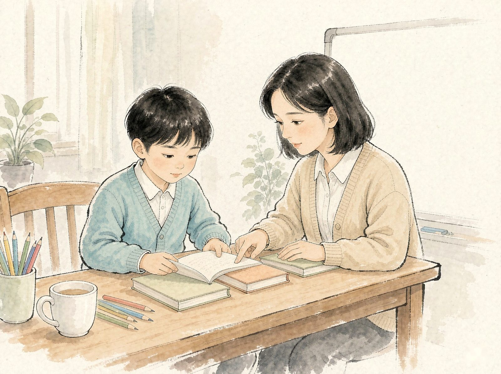

上古的易，分连山、归藏、周易三套体系。
连山易以艮山开头，取山峦连绵、生生接续之意；
归藏易以坤地开头，取万物归根、敛藏静养之意。
它们和周易一样，都是观察阴阳变化的框架，只是着眼的方向不一样。
易的根本，是看清动静、生藏的规律，不是占卜求吉凶。

加上《周易》，三易的道理就完备周全了。
连山讲连绵生长，归藏讲收敛静养；
周易以乾、坤为纲领，健行开创、厚德含藏，
把生发和归藏合在一起，循环流转。
易道，就是懂得什么时候向前，什么时候静守，合乎中道。

落到心上理解
承接上一课存疑：向内反求，如何区分本心流露，还是自我美化的幻象。
三易的差异，恰好提供参照。
连山，看生生不断，适合我们精进、接续修行，在绵延日用里护持善念；归藏，看归根静默，适合我们收敛浮躁、静下来自省，勘破表面的情绪、念头，看清底层的自己。
周易是流行周变，兼顾动与静。
只学周易，容易一味求变通、向外周旋；知晓连山、归藏，便懂得：生起之时有接续，躁动之时宜归藏。观象是外缘，回来看自己心念的生、续、收、藏，才是易教本意。取象而不执象，便是无住。
另有一问：归藏重坤藏，如何避免消极退守、回避担当。
周易乾坤并建，恰好破此边见。
乾，是担当、精进、持续开创，对应连山生生；坤，是承载、含藏、反省静养，对应归藏敛藏。二者不可拆分：没有乾的健行，坤藏便成枯寂逃避；没有坤的收纳沉淀，乾行容易躁动耗散。
我们修行处事，就是在这两者之间拿捏分寸：该担当向前时，取乾健连山之义；该自省收敛、蓄养力量时，取坤厚归藏之义。周易的周全，在于不偏一边，随流转而切换，中道义就在其中。观象而不住于动静二相，即是无住。
追捧连山归藏，执着秘传、术数预言，追逐神通；厚古薄今，独尊连山归藏，轻视周易
三易核心是观变修心，术数只是附属外缘；周易统摄生藏，义理最周详，是三易的总纲
一、勘俗见。不要把连山归藏当成神秘算命秘法，本质是古人观察动静变化的思维框架。不要以为越古老的典籍就越高级，周易是三易的汇总，义理最周全。
二、现代对照。如同两种训练模式，连山是持续稳定的正向积累；归藏是定期复盘、静心沉淀，搭配周易的灵活应变。如同完整的作息节奏，乾是白天劳作成长，坤是夜晚静养复盘，缺一不可。
三、承接常变主线。阴阳动静的大道恒常不变（常）；三易的卦序、取用方式，是不同时代的教化设计（可变之相）。阴阳生藏的大道恒常不变（常）；三易的首卦、教化切入方式，是随时代设置的方便（可变之相）。
四、承接教与学二分。师长讲清三易源流、旨趣，区分义理和术数，属于施教一侧；学人对照自身状态，知何时当进、何时当敛，是自主修习。师长讲明三易源流、乾坤互根的义理，属于施教一侧；学人觉察自身状态，知进知止，是自主修习。
承接选择力练习：明三易取教之别，知生续、归藏之机，动静合度，不迷古秘。
字义与句读
连山：夏易，首艮；艮为山，山山相连，生生不绝；归藏：商易，首坤；坤为地，万物归地而藏。
上句释义：上古有《连山》《归藏》两套易道体系，与《周易》合称三易；取象不同，用以昭示万物生生接续、归根敛藏两大根本态。
三易：连山、归藏、周易；详：义理详备，本末、动静、生藏兼备，全体圆显。
下句释义：有《周易》以乾坤为纲领，开合周流，于是连山、归藏所昭示的生生、归藏之义，一并得以周全阐明，三易之道完备显发。
二命题考辨
（1）易道的源头分流
很多人学易，直接从乾坤开篇的周易入手，以为这就是易的全貌。
连山首艮，艮为止、为始。一山接一山，前一个终点，就是下一个起点，讲的是因果相续、绵延不绝；
归藏首坤，坤为藏、为母，万物生长之后，终归大地，收敛涵容，讲的是归根复命。
周易首乾次坤，乾健坤顺，一辟一阖，周流循环，把“续”与“藏”收纳在一套流转体系之中。
三易不是三种不同的大道，是同一阴阳大道，从不同的观察切面建立教化。
（2）对照当下现代语境
现代人的通病：要么一直向外追逐、持续消耗，不懂收敛归藏；要么一味枯静、躺平封闭，失去生生接续的活力。
连山教我们：善念、修行、事业，贵在持续相续，不要一曝十寒；
归藏教我们：喧嚣之后，一定要回到内在沉淀，不然所有向外的获取，都会变成负担。
一动一静，一伸一屈，刚好平衡。
现代人的生活两种极端：一种永不停歇，内卷消耗，不懂停下来休养；一种躺平退守，回避责任，放弃生长。
周易乾坤并建的模型，给出中道：积极创造、承担责任（乾），同时懂得接纳局限、定期沉淀、涵养根基（坤）。进取不是盲冲，静养不是逃避，二者互为根基。
（3）般若范式互参
三易之象，皆是假名设施。
三易卦象，皆是标月之指。
联动三才五蕴太极空杯模型：自性虚空，是不变的易之本体；连山、归藏、周易，是三种不同角度的光影投射。光影形态不同，虚空不受影响。我们借三易的象，观察念头的生起、持续、收敛、沉寂，而不被象困住。自性虚空，是不变的易体；连山、归藏、周易，是从不同切面描述心念与万象的生灭循环。周易的周流，即是在生、住、异、灭之中，不取生相、不取灭相，行于中道。
呼应“本乎数”：三易，对应生、藏、周流三态。三易成全体，乾坤为二元，阴阳循环。
延伸义理：
《金刚经》：不住生灭，连山见生而不住生，归藏入静而不住静。应无所住而生其心，乾是生其心，坤是无所住，周易正是二者并行。
《道德经》：夫物芸芸，各复归其根，正是归藏的内核；连山则近于“生生不息”。归根复命是归藏，道生万物是连山，道德经统此二者，和周易格局相通。
《坛经》：动静一如，不偏于动，不溺于静，是统摄三易的本心。动静一如，不执动，不溺静，与周易乾坤互根的中道义契合。
（4）三易体系收束
连山，重在“始”，山山相连，前终后始，持续不断；
归藏，重在“藏”，万物归根，敛蓄涵容；
周易，重在“循环”，乾开辟，坤收纳，由生而藏，藏而复生，环转无休。
单讲连山，容易一往无前，不知停歇；单讲归藏，容易沉守静境，失去生机。周易把两端合为一体，所以说“三易详”。后世独传周易，也正是因为它的框架最完备，可以兼容前二易的教化作用。
三跨典互参（老庄、般若对照）
· 《道德经》归根曰静，和归藏宗旨高度契合；持续生生，即是连山之旨。：《道德经》归根曰静，和归藏宗旨高度契合；持续生生，即是连山之旨。
· 《庄子》万物有乎出，有乎入，出入无见其形，是谓天门，贯通连山、归藏的生藏之机。：《庄子》万物有乎出，有乎入，出入无见其形，是谓天门，贯通连山、归藏的生藏之机。
· 串联前文：六经讲求，深入《易》学，溯源三易体系，拓展易道格局。六经体系之内，深入《易》学，完成三易源流的完整铺陈。
· 《道德经》：道生万物，归根曰静，一乾一坤，即是三易的总旨。
· 《庄子》：消息盈虚，终则有始，正是周易周流、统摄生藏的写照。
四和前面课程的张力
次第链条：……→ 号六经，当讲求 → 有连山，有归藏 → 有周易，三易详
呼应“人不学，不知义”：知易道生、续、归、藏的动静之义；知乾坤互根、生藏循环之中道义；
呼应“玉不琢，不成器”：借三易之象，打磨自心动静的分寸；借周易周流之理，打磨自心动静的分寸；
呼应“教之道，贵以专”：专守中和本心，随机选用生藏之教，不猎奇迷秘。专守中和，进退动静两相平衡。
五1. 连山、归藏文本残缺，仅存名目与零星佚文，如何把握边界，不凭空杜撰发挥？
2. 归藏重坤藏，会不会落入消极退守、回避担当的误区？
3. 三易和先后天八卦，应当如何搭配参看，而不混杂紊乱？
4. 周易文本里面，卦辞爻辞多有吉凶占断，如何区分占验之用和修心本义？
5. 乾坤并建，乾元为首，会不会隐含阳尊阴卑的固化偏见，该如何善读？
6. 三易之后，如何把这套动静模型，和四书的仁义、孝经的仁本融合为一体？